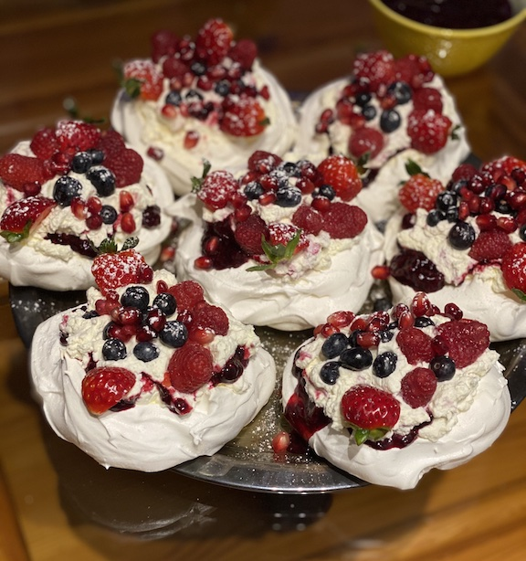

Mixed Berry Pavlova

Description
This is a recipe for Pavlova Meringue Cake. It's my go-to cake for various celebrations. What's most important, it's easy to make and delicious!
You can impress your family and friends - everyone loves it! It's crunchy outside, creamy inside and with berries on the top!"
Ingredients
Meringue
- 6 egg whites
- 1 and 3/4 cups of white granulated sugar
- 1 spoon of corn starch
- 1 spoon of lemon juice
- a pinch of salt
Cream and berry sauce
- 8 oz mascarpone
- 16 oz heavy whipping cream
- 2 spoons of sugar
- 3 cups frozen mixed berries mix
- 2 12 oz raspberry packages
- 6 oz blackberries
You can decorate Pavlova with any fruit you like but I strongly recommend using berries (strawberries, blackberries, blueberries etc.) or acidic, sour fruit like kiwi.
Directions
Meringue
- Preheat the oven to 248 degrees F (120 degrees C).
- Line a baking sheet with parchment paper.
- Beat egg whites in a large bowl until stiff but not dry. Add a pinch of salt.
- Gradually add sugar, about 1 tablespoon at a time, beating well after each addition. Continue beating until thick and glossy.
- Gently fold in cornstarch and lemon juice.
- Spoon mixture in a circle on the parchment. Working from the center, spread mixture toward the outside edge and build the edge slightly. This should leave a slight depression in the center.
- Bake in the preheated oven for 30 min. Lower the temperature to 212 degrees F (100 degrees C) and bake for 3 hours until meringue is dry and sounds hollow when tapped. Cool on a wire rack or in the oven.
Cream
- Beat heavy cream from the fridge with sugar in a medium bowl until stiff peaks form.
- Add mascarpone with a spatula and gently mix it together.
Berry sauce
- Add frozen berries into a saucepan and simmer it with sugar until it makes dense berry sauce.
- Let it cool down before pouring it on the meringue.
General Directions
Fill the center of meringue with whipped cream, add some berry sauce and staff inside the cream with raspberries and blueberries. Add additional layer of cream and decorate it generously with berries on top.
You can limit yourself to one layer only. Our family loves Pavlova with tones of berries and cream and that's why I assemble it this way!
Feel free to experiment!